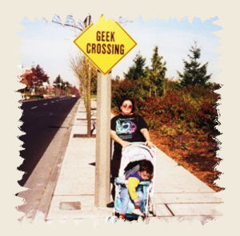

The set of web pages in this section were created as part of an online course in web design back in 2006. I have taken those pages and updated the markup and CSS to HTML5/CSS3 respectively. I have removed the graphics that identified the course (the website seems to have gone out of business anyway), so all of the graphics on these pages were created by me using Corel PaintShop Pro X. Photos are either royalty-free photos taken from clip art collections I own or taken by me or a family member.
My husband took the photo on this page in 1999. We had just moved to Redmond, WA so I could take a job working as a contractor at Microsoft. That's me with my son who was just over three years old at the time.
Despite what you may think, the sign actually existed. It appeared on 156th Ave. NE (Microsoft Way) and stayed there for a couple of days before someone took it down. Just outside of your view on the left is the building where the Visual Studio people had their offices back then.
You can view the original pages I created for the course if you want to compare the old and new.
Want to see the rest of the pages I created for this course? Start with Lesson 1